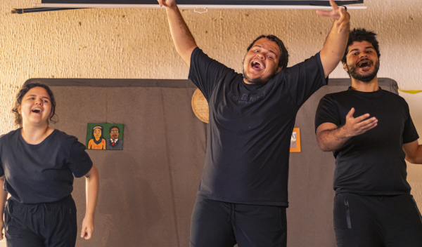
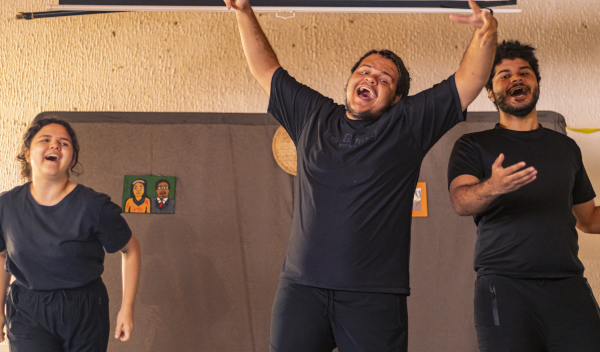

Avoa Acauã, Avia Maria!
A peça surgiu de uma disciplina do curso de Teatro-licenciatura da UFC, no ano de 2022. Como um pontapé para a criação dramatúrgica, os integrantes do elenco trouxeram histórias do interior contadas pelas mulheres que os criaram. Desde então o espetáculo já foi apresentado em diversos espaços como escolas, bibliotecas comunitárias e festivais de teatro cearense, como Festival de Teatro de Fortaleza e Festival Nordestino de Teatro de Guaramiranga.
Veja mais fotos!Oficina de Dedoches
As oficinas de dedoches são ações independentes do grupo, cujo objetivo é levar a confecção de bonecos de dedo (dedoches) a diversos públicos. Por se tratar de uma técnica simples e que demanda menos tempo, o grupo tenta proporcionar um primeiro contato com o Teatro de Bonecos. Tais oficinas já foram realizadas em espaços como o CCBJ, a Escola Municipal José Bonifácio de Sousa, a Casa Ame e a Pracinha da Cultura do Vicente Pinzon.
Veja mais fotos!Autoidentidade
O projeto “Autoidentidade: Poéticas e relações do Mamulengo no autorretrato” foi fomentado pelo II Edital Cultura Infância da SECULT-CE. Em 2023 foram realizadas oficinas de construção de mamulengos instigando o desenvolvimento de processos identitários através do autorretrato, as ações foram realizadas na Biblioteca Comunitária Papoco de Ideias e 4 escolas de ensino fundamental da rede municipal de ensino de Fortaleza.
Veja mais fotos!Poéticas de Si
Projeto desenvolvido por meio da Chamada Pública para Iniciativas de Desenvolvimento Comunitário do Grande Bom Jardim, promovida pelo Centro Cultural Bom Jardim (CCBJ) em 2022. A proposta ofereceu oficinas de criação de mamulengos para crianças e adolescentes do Grande Bom Jardim, incentivando processos identitários por meio do autorretrato. As atividades abordaram o mamulengo como metodologia de aprendizagem, explorando desde sua historicidade até sua construção.
Veja mais fotos!